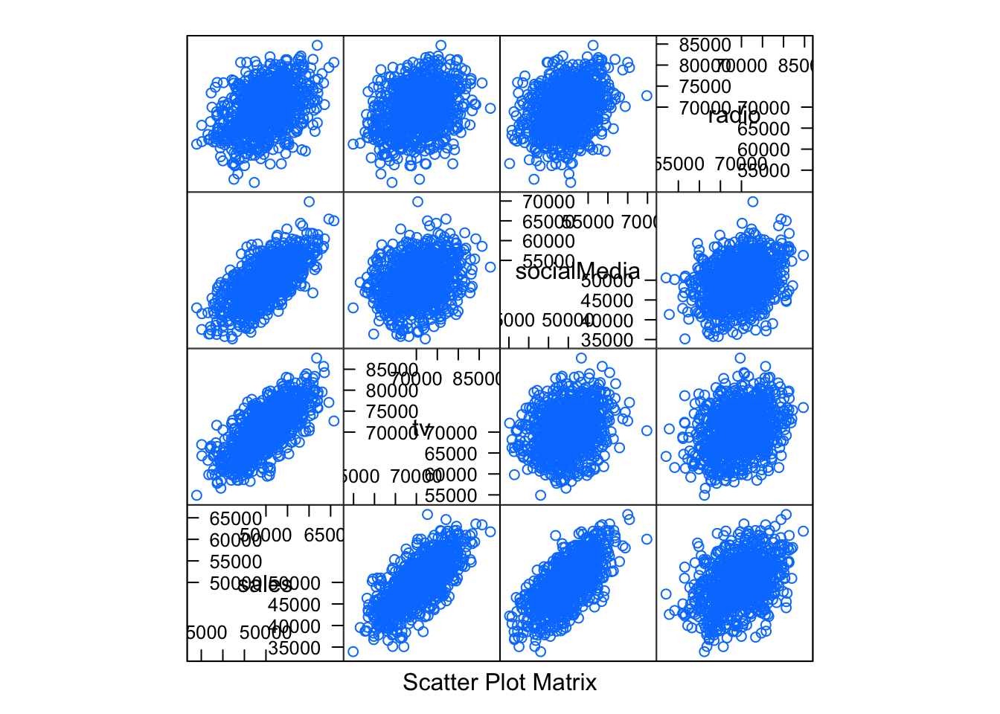
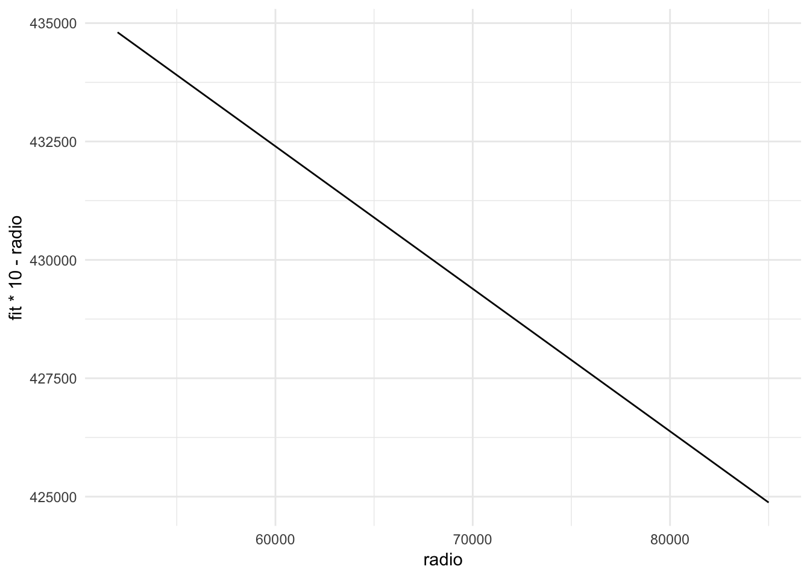

What is the need to look beyond p-value?
In my last post, I mentioned how we can use p-values to select important variables in a linear model. In general, this sounds like an easy basis of testing a hypothesis, but that is not where the story ends.
In a practical setting, you need to look beyond mere p-value of an experiment. To understand, let us walk through an example. We will generate our own dataset for this example.
library(dplyr)
library(lattice) # for splom
library(ggplot2)
library(plotly)# Using a correlation matrix (let's assume that all variables
# have unit variance
M = matrix(c(1, 0.7, 0.7, 0.4,
0.7, 1, 0.25, 0.3,
0.7, 0.25, 1, 0.3,
0.4, 0.3, 0.3, 1), nrow=4, ncol=4)
# Cholesky decomposition
L = chol(M)
nvars = dim(L)[1]
set.seed(1)
# number of observations to simulate
nobs = 1000
# Random variables that follow an M correlation matrix
r = t(L) %*% matrix(rnorm(nvars*nobs, mean = 50000, sd = 5000), nrow=nvars,
ncol=nobs)
r = t(r)
salesdata = as.data.frame(r)
names(salesdata) = c('sales', 'tv', 'socialMedia', 'radio')
# Plotting and basic stats
splom(salesdata)
summary(salesdata) sales tv socialMedia radio
Min. :33934 Min. :54906 Min. :35172 Min. :52072
1st Qu.:46584 1st Qu.:66961 1st Qu.:46225 1st Qu.:65903
Median :49820 Median :70901 Median :49618 Median :69518
Mean :49901 Mean :70639 Mean :49703 Mean :69451
3rd Qu.:53529 3rd Qu.:74194 3rd Qu.:53221 3rd Qu.:72973
Max. :65770 Max. :87670 Max. :69830 Max. :84702 Now we have a dataset for sales, with 3 independent features: tv, socialMedia, and radio. We have generated 1,000 observations. Each observation consists of data for a particular market. The 3 features give us the amount spent in USDs in different methods of advertising. The sales column has the corresponding sales in that market.
Now that we have the data, let’s build a linear model taking all 3 features.
model <- lm(sales~., data = salesdata)
summary(model)
Call:
lm(formula = sales ~ ., data = salesdata)
Residuals:
Min 1Q Median 3Q Max
-7097.0 -1723.0 49.7 1652.5 7543.8
Coefficients:
Estimate Std. Error t value Pr(>|t|)
(Intercept) -2.124e+04 1.308e+03 -16.242 < 2e-16 ***
tv 5.621e-01 1.552e-02 36.225 < 2e-16 ***
socialMedia 5.348e-01 1.553e-02 34.446 < 2e-16 ***
radio 6.991e-02 1.586e-02 4.409 1.15e-05 ***
---
Signif. codes: 0 '***' 0.001 '**' 0.01 '*' 0.05 '.' 0.1 ' ' 1
Residual standard error: 2389 on 996 degrees of freedom
Multiple R-squared: 0.7888, Adjusted R-squared: 0.7882
F-statistic: 1240 on 3 and 996 DF, p-value: < 2.2e-16All 3 features have a low p-value as per our model. Wonderful! Also, the coefficients of all 3 features are positive. This means investing more in these media is related to increase in sales. Let’s throw our money into advertising of all sorts then.

Source : Google Images
Hold on!
Statistical significance means that you can conclude that an effect exists. It is a mathematical definition. It does not know anything about the subject area and what makes up an important effect.
Let’s go back to looking at the coefficient of radio. The low p-value means the effect is significant. Its coefficient is approximately 0.069. This means an extra \(\$10,000\) invested in radio advertising is related to a sale of around 690 more units. The question that arises at this point is this: Is that extra investment worth it?
Suppose this data is for a particular car model, for which sale of each car results in a profit of \(\$1,000\). An increase in \(\$10,000\) of spending in radio advertising would be related to a sale of around \(690\) more cars. Sale of \(690\) more cars would mean a profit of \(\$690,000\). That is a net profit of \(\$680,000 (\$690,000 - \$10,000)\). That is 68 times the extra money invested in radio advertising.
Consider a different scenario where this data is for the sales of a particular watch, for which sale of each watch results in a profit of \(\$10\). An increase in \(\$10,000\) in radio advertising would mean a sale of around \(690\) more watches. Sale of \(690\) more watches would mean a profit of \(\$6,900\). That is a net loss of \(\$3,100\).
#funtion to get model effects on transformed outcome
plot_effect <- function(predictor){
#get effects for predictor
effs <- effects::effect(predictor, mod = model,
xlevels = list(xpredictor=min(salesdata[predictor]):max(salesdata[predictor])))
model.effs <- effs[c('x', 'lower', 'fit', 'upper')] %>%
as.data.frame()
model.effs$fit <- model.effs$fit
model.effs$lower <- model.effs$lower
model.effs$upper <- model.effs$upper
return(model.effs)
}g2 <- plot_effect('radio') %>%
ggplot() +
geom_line(aes(x=radio, y=fit*10-radio))+
theme_minimal()
g2